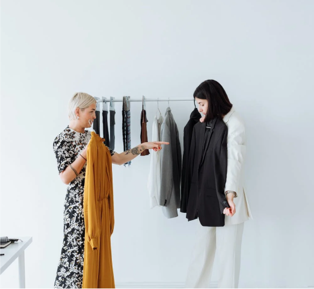
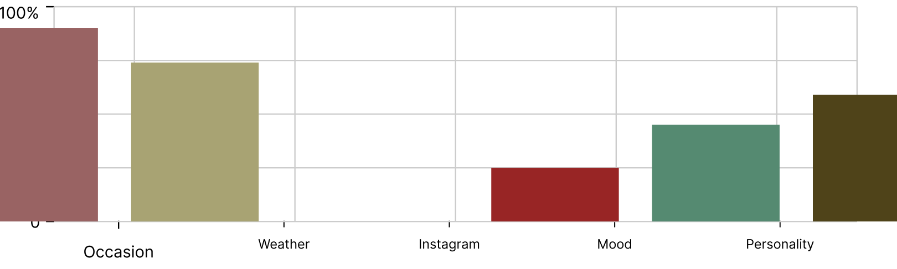

Design a mobile app that allows users to easily organize their wordrobe and get suggestions on what to wear for different events. The app should also allow users to create and share their own styles, engage with other users, and shop for clothes from fashion stores
Goal
Design a solution that provides users with an easy and efficient way to organise their wordrope, receive personalized outfit suggestions for various events, create and share their styles, interact with other users, and shop for new clothes from different fashion stores
Few pointers to consider
The ability to easily organize their wordrobe
Suggest what to war for differnt events
Create and share outfit styles with others
Engage with other users
Shop for clothes from fashion stores
What is Smart Drip?
Smart Drip is more than just a wordrobe Management app for tracking your fashion items. It offers an all-in-one solution for fashion enthusiasts. The app assists users in planning their outfits and finding new sustainable brands to shop with. Making a delightful experience for users. The app's ultimate goal is to make the process of finding something to wear a fun and joyful experience.
Why Smart Drip?
"I have nothing to wear." who with a packed wordrope hasn't said this way too many times? The thing is, it's hard to remember what you own when pieces are pushed to the back of your wordrope or in store.
"Smart Drip is the ultimate wordrobe Management app that offers a range of features to cater for the needs of fashion enthusiasts. It makes adding clothes easy. its gamified feature and filtering system suggest outfits based on events and existing wordrobe ensuring that you never run out of outfit ideas.

What we seek to address?
One problem that smart Drip can solve is difficulty of managing and organizing one's wordrobe. The app provides a range of features that help users to add clothes, plan outfits, and discover new sustainable stores to shop with. Additionally, the app's filtering sysytem suggests outfits based on the user's existing wordrobe and upcoming events, ensuring that they never run out of outfit ideas. By using Smart Drip, users can easily manage their wordrobe and make fashion a stress-free experience.
Design Process
The process and deliverables will guide me to design a wordrobe management app because it enables self awareness where discovery and definition work is lacking. It also allow me to map and understand the problems, so I know what to do next and what tools are available to use.
Project Roadmap
Research
I started by learning about the different variables that affect my target audience, the common problems and possible solutions. it was important for me to start the research by laying down the problem, presenting my hypothesis , and defining ways to learn more from the user. To effectively solve the problem, i needed to identify and contextualise theactual problem or opportunity.
The target users for this app are fashion-concious individuals who want to keep their wordrobe organized and easily accessiblle. They may struggle with deciding what to wear or keeping track of what they own. Based on users reasearch, users desire the ability to add clothes to their wordrobe quickly and easily and to be able to snap pictures of their clothing to keep an accurate record.
Factors influencing the choice of outfit

The intention of the research
Assume a beginners mindset, remove assumptions and bais from designs and align myself with the user's needs.
understand what drives users' wordrobe choice behaviour and provide a better experience
Uncover user pain points or needs that the user might not even be well aware of.
understand what the users may consider valuable innovation and better solution.
Seeking opportunities to innovate
While i was interviewing the users, i noted comments that can help us inovate and improve swimming experience
Tracking clothes in one's wordrobe is a challenging task for users.
Fill in styling gaps with recommendations and wish-list picks.
It's difficult to connect seamlessly with their favourite online sources to buy those new items.
Despite having a full closet, it's difficult to put together outfits quickly and coordinate them with accessories.
Finding it challenging to keep up with trends and incorporate them into their wordrobes.
Spending extra time in changing outfits to sort out the best wear and must manage time carefully between work and family.
Creating Personas To Balance User Needs With Product Goal
After studying the feedback of the user interview. I deduced my findings in order to build two personas who represent the target audience and match their concerns with the solution intended. This was helpful tool to bridge the gap between research and designing for different user needs and expectation.
Vybes Samuel
A 27 years old || "Give me a community to stay accountable to, and we will beat every competition out there".
Vybes is particular about his daily attire but sometimes miss out of fashion due to his hectic lifestyle.
Goals
To be able to convey his confidence through his appearance.
Frustrations
Forgetting what clothes are in their wordrobe.
Struggling to put together outfit for upcoming events.
Feeling like they don't have enough clothing options.
Needs
To put his wordrobe items in order.
To save time while choosing an equisite look.
Keep track and maintain order of his wordrobe.
Annie Idoko
A 37 years old || PR Manager 02 sport.
PR manger and a mother of two who strive balance her work and family. Despite her busy schedule, she always dresses wella and believes thatour physical appearance reflect our personality.
Goals
Annie wants to either post a task and wait for students to apply, or you can browse the marketplace and purchase a service directly.
Frustrations
Not knowing how to style certain items in their wordrobe.
Feeling unispired when it comes to fashion choices.
Finding it difficult to share fashion inspiration with others.
Not knowing what to wear for certain occasions.
Needs
A fun and interactive way to engage with fashion and share their personal style.
To save time while choosing an equisite look.
Needs assistance in planning outfits for upcoming events or finding new ways to wear their existing clothes.
Time-saving and stress-free assistance in selecting outfits for specific occasions.
inspiration and feedback for creating stylish outfits.
Priliminary Ideation To Prepare The Design Solution
I continued to design the solution and outlining my rationale behind each route. I started off with a simple site map showing how users navigates through the application. This will help me in understanding ways users can interact with the product, as well as creating navigations that will help the users achieve their goals.
From Insight To Designing Wireframes
I decided to digitized the paper sketches befor moving onto hig fidelity prototype. This approach allowed me to move quickly with a clear understanding of what i wanted to design. I highlighted key features from the outcome of user interviews. The first feature shows personalization during the onboarding process. Another feature is the workout plans and coaching. These features meet both the business and user goals.
Onboarding
I designed an intuitive onboarding to optimise the app experience for new users and guide visitors through a quick transition to understand what the app offers.
Sign up and Onboarding Question
In order to customise the app experience to each user, I requested some personal info that will inform and help me create personalised experience.

.png)


.png)

.png)
.png)
.png)
.png)
.png)
.png)
.png)


.png)
.png)
.png)


.png)
.png)
.png)
.png)
.png)
.png)